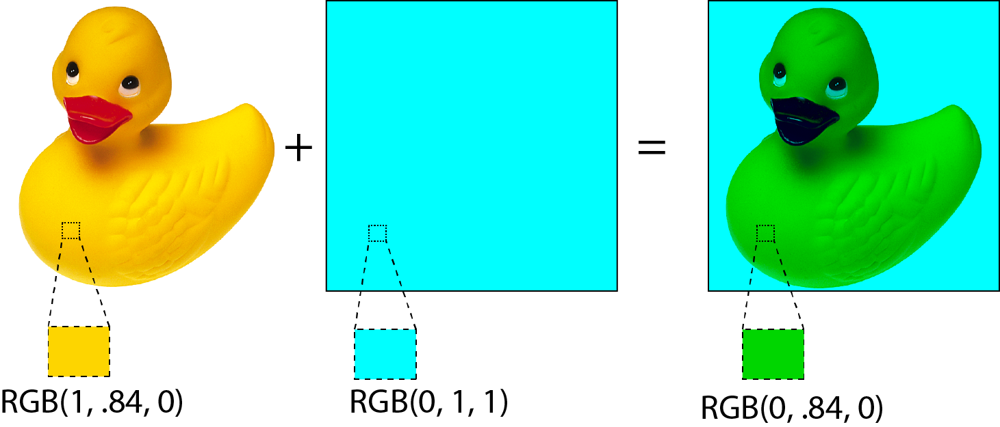
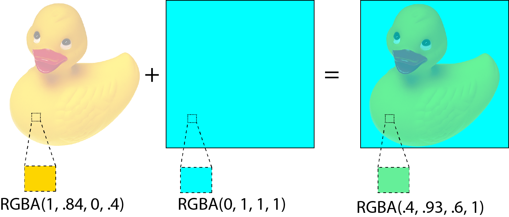
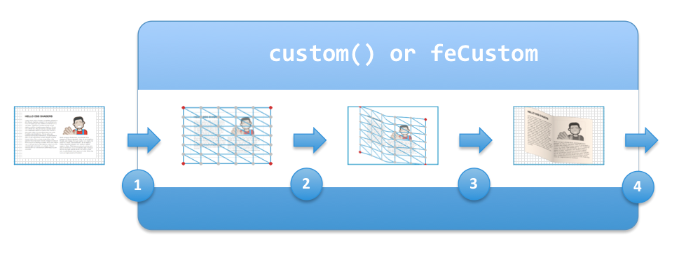

Adobe and the graphical web
New rendering features in HTML
Compositing and blending
{kind=link}
What is blending?
- Takes the colors of the shape and the background
- Combine the colors using a 'mixing' formula
- Use the alpha of the background to create a new color
Example of blending
Alpha of source and background are ignored
Effect of background alpha
Result = alpha x blendedColor + (1 - alpha) x original
Different blend modes

- normal
- multiply
- screen
- overlay
- darken
- lighten
- color-dodge
- color-burn
- hard-light
- soft-light
- difference
- exclusion
- hue
- saturation
- color
- luminosity
Compositing
- combines graphical objects (also known as shape)
- Works with the alpha channel
- Is a low level primitive for graphical effect
- Already part of the canvas specification
Simple alpha Compositing
Different blend modes
- clear
- src
- dst
- src-over
- dst-over
- src-in
- dst-in
- src-out
- dst-out
- src-atop
- dst-atop
- xor
- plus
Group compositing
Talk about shape buffer
Show why it's needed. ie filters, clear blending
Current status
- Working draft since August 16
- Partially implemented in WebKit
- Working prototype available
CSS filters
- Alignment of SVG and CSS feature sets
- Allows use of SVG filters on HTML content
- filter shorthands for basic filters
- support for custom shaders
svg filters
filter: url(#svg-filter-id);
shorthand filters
filter: <short-hand-function>(<params>)
original
grayscale(1)
sepia(0.8)
saturate(0.2)
hue-rotate(90deg)
opacity(0.2)
invert(0.5)
brightness(0.25)
contrast(0.5)
blur(6px)
drop-shadow(...)
css shader filter
filter: custom(...)
css shaders model

shaders - vertex flow
manipulate the surface by specifying:
- the area that the vertex mesh applies to
- the number of vertex rows and columns
- a shader programs that deforms the mesh points
shaders - pixel flow
After creating the mesh, a shader could examine the pixels in the filter region
However, rendered content includes:
- secure information
- third party information
- visited links
which results in a security leak...
How is the information leaked?
- Read a pixel at a specific location
- Depending on the color, execute a function that is fast or slow
- Time the duration of a rendering pass
- Infer data
How did we fix this?
We disallow access to the pixel data...
We use the Angle library to:
- Compile the shader
- Examine the data flow
- If there is texture access, the shader is rejected
Is a pixel shader still useful?
YES!
- Information can be passed from vertex shaders
- Mix() function specifies blending and compositing of the shader's result
- Shader can specify a color matrix